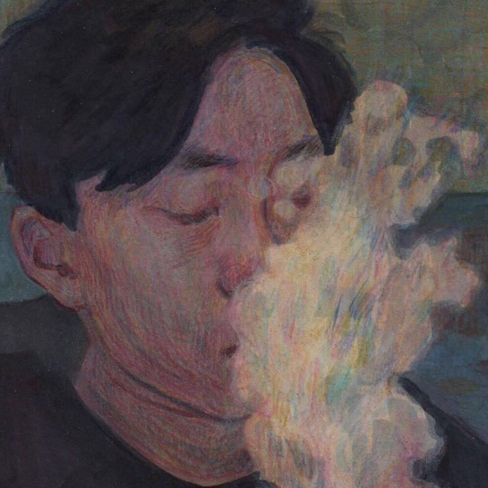

Every good treaty is signed over s'mores. The dragon supplied the fire —
your job is the marshmallows. Hold to toast. Release in the golden zone. Burnt ones go to the seagull (he insists).所有像样的条约,都要在烤棉花糖旁边签署。火由龙提供——
棉花糖归你们负责。 按住开烤,在金黄区间松手。烤糊的归海鸥(他强烈要求的)。
Perfect marshmallows: 0 / 3
🔥🍡
Press and hold… release at just the right moment!
STORY TWO · PAGE 1 OF 5
🏝️🍰
"Land ho!" called Erin — then, after a long sniff: "…Cake ho?"
Dead ahead: an island with sponge-cake cliffs, a hot-chocolate lagoon, and fog that
smelled suspiciously sweet.
Sniff the fog. What is that smell?“陆地——!”Erin 喊道——然后深深吸了一口气:“……蛋糕——?”
正前方:一座小岛。海绵蛋糕悬崖,热巧克力潟湖,还有一团闻起来甜得可疑的雾。
闻闻这团雾。到底是什么味道?
…
STORY TWO · PAGE 2 OF 5
🧭
The sugar-fog was thick as frosting. One wrong turn and a ship could be stuck in
meringue for days.
Which way in, Captain?糖雾浓得像糖霜。只要一个转向失误,船就可能在蛋白霜里困上好几天。
船长,从哪条路进去?
…
STORY TWO · PAGE 3 OF 5
📜🖐️
Dessert islands have rules. Someone must be sworn in as Chief Taste Officer —
a sacred duty involving great responsibility and unlimited second helpings.
All eyes turned to Erin.
Raise your hand and hold to take the oath: "I solemnly swear to taste everything twice. For science. Three times if it's chocolate."甜品岛有甜品岛的规矩。必须有人宣誓就任首席品尝官——一项神圣的职务,意味着重大的责任,和无限量的续盘。
所有人的目光都转向了 Erin。
举起手,按住宣誓: “我郑重宣誓:每样东西都尝两遍。为了科学。如果是巧克力,尝三遍。”
STORY TWO · PAGE 4 OF 5
🔬😋
Chief Taste Officer Erin began her official survey.
Tap each dessert for the official verdict:首席品尝官 Erin 开始了她的官方调研。
点每一样甜品,听听官方鉴定:
…
STORY TWO · PAGE 5 OF 5 · DESSERT RAIN
Then the island did what dessert islands do at sunset: it rained dessert.
Catch the sweets before they splash into the sea!
⚠️ Watch out — the island also grows broccoli. Nobody knows why. Do NOT catch the broccoli.然后,到了日落时分,甜品岛做了所有甜品岛都会做的事:下起了甜品雨。
赶在甜点掉进海里之前接住它们!
⚠️ 小心——这座岛不知为何也长西兰花。没人知道为什么。千万、千万别接西兰花。
Sweets caught: 0 / 10
Tap the falling sweets! 🍩
STORY THREE · PAGE 1 OF 5
⛈️😂
It rolled in from the west: a storm that didn't rain water. It rained giggles.
Anyone caught in it laughed until they couldn't steer.
Tap the crew to hear what the storm did to them:它从西边滚滚而来:一场不下雨的风暴。它下的是咯咯笑。
任何被罩进去的人,都会笑到没法掌舵。
点点船员们,看看风暴把他们怎么了:
…
STORY THREE · PAGE 2 OF 5
📖
Captain Ellen checked the ship's log. It was… deteriorating.
Tap to flip through the entries:Ellen 船长翻开航海日志。记录的情况……正在恶化。
点一点,翻翻这几条记录:
…
STORY THREE · PAGE 3 OF 5
🗞️
Deep in the chart drawer, Erin found an ancient warning:
"A giggle-storm cannot be fought. It can only be out-deadpanned.
One terrible joke, told with a perfectly straight face, and the storm will surrender out of respect."
Who has the straightest face on board?在海图抽屉的最深处,Erin 找到了一条古老的警告:
The crew tied themselves to the mast (safety first). Captain Ellen stepped
to the bow and cleared her throat.
Choose her weapon — the joke must be TRULY terrible:船员们把自己绑在了桅杆上(安全第一)。Ellen 船长走上船头,清了清嗓子。
为她挑选武器——笑话必须烂得足够彻底:
…
STORY THREE · PAGE 5 OF 5 · POP THE GIGGLES
The joke landed. The storm wobbled. Now finish it —
pop the last giggle-bubbles before they regroup!笑话命中了。风暴晃了晃。现在,收尾——
赶在残余的咯咯笑泡泡重新集结之前,把它们全部戳爆!
Giggles popped: 0 / 15
Tap them fast — they don't stay long! 😂
STORY FOUR · PAGE 1 OF 5
🌊
It was a quiet night — too quiet. Then, from below: a hum. Wobbly. Off-key. Sad.
Tap the water to listen closer:那是个安静的夜晚——安静得过分。然后,海面之下传来一阵哼唱。摇摇晃晃。跑调。还有点难过。
点点海水,凑近听听:
…
STORY FOUR · PAGE 2 OF 5
🐋💭
"I've forgotten my song," rumbled the whale, embarrassed.
"All whales get one. Mine just… slipped out of my head. Like a fish through fingers."
Erin leaned over the rail. "What do you remember about it?"“我把我的歌忘了,”鲸鱼低声说,很不好意思。
“每头鲸鱼都有一首自己的歌。我的那首……就这么从脑子里溜走了。像鱼从指缝里滑走一样。”
Erin 趴在栏杆上问:“那你还记得它的什么?”
…
STORY FOUR · PAGE 3 OF 5
🐚✨
"Lost songs wash ashore as singing shells," said Captain Ellen,
already lowering the rowboat. "Old sailor knowledge."
On the nearest sandbar, four shells glowed faintly.
Tap each one to collect a piece of the song:“丢失的歌会变成会唱歌的贝壳,被冲上岸,”Ellen 船长说着,人已经在放小艇了。“老水手都知道。”
最近的那片沙洲上,四枚贝壳正微微发光。
挨个点一点,把歌的碎片收集起来:
…
STORY FOUR · PAGE 4 OF 5
🎼
But shells are shy. They only teach a song to two voices taking turns — that's the rule.
The Captain takes the odd rounds. The First Mate takes the even rounds.
The shells will glow in a pattern — repeat it exactly, each on your own turn.
Yes, this means you both have to play. The whale is waiting. No pressure.可是贝壳很害羞。它们只肯把歌教给轮流开口的两个声音——这是规矩。
单数轮归船长,双数轮归大副。
贝壳会按某个顺序依次发光——轮到谁,谁就把顺序原样复述出来。
是的,这意味着你们俩都得上场。鲸鱼还等着呢。不用紧张。
STORY FOUR · PAGE 5 OF 5 · THE ECHO SONG (TWO PLAYERS!)
🎶 Get ready — the shells are about to sing…
Round 1 of 5
Watch which shells glow, in what order — then tap them back in the same order!
STORY FIVE · PAGE 1 OF 5
🕳️☁️
One morning the crew woke to something impossible: a hole in the sky.
A cloud-shaped gap of nothing, right where a cloud should be.
Tap the hole. (Carefully.)一天早上,船员们醒来,看到了一件不可能的事:天上有个洞。
一块云朵形状的“什么都没有”,正好出现在本该有一朵云的地方。
点点那个洞。(小心点。)
…
STORY FIVE · PAGE 2 OF 5
🗺️
The oldest sailors spoke of a Cloud Painter — a quiet traveler from a sea far,
far away, who paints the clouds into place while he dreams. No one had ever seen him awake.
His floating studio drifted somewhere past the lighthouse.
They found it at dusk. How should they knock?最年长的水手们提起过一位云画师——一位来自很远很远另一片海的安静旅人,他在做梦的时候,把云一朵一朵画上天空。从来没有人见过他醒着的样子。
他那间漂浮的画室,就在灯塔再过去一点的某个地方。
黄昏时分,他们找到了它。该怎么敲门?
…
STORY FIVE · PAGE 3 OF 5
🫖🖌️
Inside: a room that smelled of rain and jasmine tea.
Tap around the studio:屋里:一个闻起来有雨水和茉莉花茶味道的房间。
在画室里四处看看:
…
STORY FIVE · PAGE 4 OF 5
And there, in a chair by the window, was the Cloud Painter himself — fast asleep,
a little cloud rising softly from his breath, already looking for its place in the sky.而就在窗边的椅子上,坐着云画师本人——睡得正熟。一小朵云正从他的呼吸里轻轻升起,已经开始在天上寻找属于自己的位置了。

The Cloud Painter — works strictly in his sleep.
"Should we wake him?" whispered Erin.
"Never wake an artist mid-cloud," said the Captain.
"Some people keep lighthouses. He keeps skies. We'll patch this one ourselves."
Erin picked up the smallest brush. It hummed happily in her hand.“要叫醒他吗?”Erin 小声问。
“画云画到一半的艺术家,是不能叫醒的,”船长说。
“有人守灯塔,他守天空。这个洞,我们自己来补。”
Erin 拿起了最小的那支画笔。笔在她手心里开心地嗡嗡作响。
STORY FIVE · PAGE 5 OF 5 · PAINT THE CLOUD
Draw with your finger to paint the missing cloud back into the sky!Fill the gap — fluffy is encouraged. Fluffy is mandatory.用手指把缺失的那朵云画回天上!把缺口涂满——鼓励画得蓬松。蓬松是强制要求。
Sky patched: 0%
Paint inside the dashed cloud!
STORY SIX · PAGE 1 OF 5
🌠
THUNK. A shooting star landed right on the deck — and sat there, glowing politely.
On closer inspection it had a stamp, an address, and a slightly singed corner.
Shooting stars, it turns out, are the Cloud Sea's mail.
Tap to unfold it:咚!一颗流星不偏不倚落在了甲板上——然后安安静静地坐在那儿,礼貌地发着光。
凑近一看,它有邮票,有地址,还有一个微微烧焦的角。
原来,流星就是云海的信件。
点一点,把它展开:
…
STORY SIX · PAGE 2 OF 5
🦉📮
But the star-letter was three weeks late. Unacceptable! The crew sailed straight to the
Star Post Office, perched on the tallest cliff, and met Postmaster Hoot —
an owl wearing tiny spectacles and an expression of pure despair.
"I sneezed," said Hoot, "during a meteor shower.
Eleven thousand letters. Everywhere. EVERYWHERE."可这封星星信迟到了整整三个星期。不可接受!船员们直接开到了立在最高悬崖上的星星邮局,见到了邮政局长“呼呼”——一只戴着小小眼镜、满脸纯粹绝望的猫头鹰。
“我打了个喷嚏,”呼呼说,“就在流星雨的时候。一万一千封信。撒得到处都是。到!处!都!是!”
…
STORY SIX · PAGE 3 OF 5
📬
Hoot explained the sacred sorting system, adjusting his spectacles:
🌙 Moon mail — lullabies, dreams, and apologies. Handle gently.
☀️ Sun mail — good mornings, compliments, and brave ideas.
🪐 Planet mail — long letters from very far away. Mostly gossip.
Before sorting, every letter needs a fresh star-stamp — and star-stamps must be licked.
Erin volunteered with suspicious enthusiasm.
"They're SHERBET flavored," she reported. "This is the best job in the universe."
Which flavor is the best one, though?分拣之前,每封信都要贴一张新的星星邮票——而星星邮票,必须用舔的。
Erin 带着可疑的热情主动请缨。
“是雪芭味的!”她汇报道。“这是全宇宙最好的工作。”
那么问题来了:哪种口味才是最好的?
…
STORY SIX · PAGE 5 OF 5 · SORT THE STAR MAIL
Look at each letter's stamp, then tap the right mailbox! Hoot is watching. Hoot believes in you.看清每封信的邮戳,点对应的邮箱!呼呼在看着呢。呼呼相信你们。
Sorted: 0 / 9
✉️
Match the stamp on the letter to its mailbox!
STORY SEVEN · PAGE 1 OF 5
🏁🦚
A golden poster appeared in every port: THE GREAT CLOUD SEA REGATTA — once a year,
winner takes the Cloud Cup.
And the defending champion strolled by: Admiral Pompous von Plume, a peacock with
a yacht made of polished mahogany and self-esteem.
"How charming," he said, examining the Marshmallow.
"They're letting family boats enter now."
Erin narrowed her eyes. The race was ON.每一个港口都贴出了金色的海报:云海大帆船赛——一年一度,冠军捧走云之杯。
这时,卫冕冠军踱着步子走了过来:冯·翎毛上将,一只孔雀。他的游艇由抛光红木和自负建成。
“真可爱啊,”他打量着棉花糖号说。
“现在连家庭船都能参赛了。”
Erin 眯起了眼睛。这场比赛,非赢不可。
STORY SEVEN · PAGE 2 OF 5
🗺️⚡
Three routes to the finish line. Von Plume always takes the easy one — he doesn't like
wind in his feathers.
Choose the Marshmallow's route, Captain:通往终点线的路有三条。冯·翎毛永远选最轻松的那条——他不喜欢风吹乱他的羽毛。
船长,为棉花糖号选一条路:
…
STORY SEVEN · PAGE 3 OF 5
🪶🪶🪶
Halfway through, the Marshmallow pulled ahead — and von Plume panicked elegantly.
He fluffed his tail and released his signature move: the Feather Fog.
Quick — fan the feathers away! Tap each one:赛程过半,棉花糖号冲到了前面——冯·翎毛优雅地慌了。
他抖开尾巴,放出了他的招牌绝技:羽毛迷雾。
快——把羽毛扇开!挨个点掉:
…
STORY SEVEN · PAGE 4 OF 5
🚣♀️🚣
The final stretch: the Glass Calm. No wind. No tricks. Just rowing.
Two oars. Two sailors. One screen.
Captain — you take the gold oar (left).
First Mate — the green oar (right) is yours.
Tap your own oar as fast as you can — but here's the secret: the boat only moves
as fast as the SLOWER oar. Row together or row in circles!最后一段:镜面无风带。没有风。没有花招。只能划。
两支桨。两名水手。一块屏幕。
船长——你负责金色的桨(左边)。
大副——绿色的桨(右边)归你。
拼命点自己的桨——但秘诀在这里:船的速度,永远取决于较慢的那支桨。要么一起划,要么原地转圈!
STORY SEVEN · PAGE 5 OF 5 · ROW TOGETHER! (TWO PLAYERS!)
⛵ The Marshmallow
⛵
🦚 Von Plume's yacht
🛥️
Both tap at once — the boat follows the slower oar!
THE CLOUD CUP · OFFICIAL HONORS
The Award Ceremony 🏅
Von Plume demanded a recount. There was nothing to recount. 🦚📉
The Cloud Cup — and everything else — goes to the crew of the Marshmallow:冯·翎毛要求重新计票。可这比赛根本没有票可计。🦚📉
云之杯——以及其余的一切——都属于棉花糖号的船员们:
🏆Captain Ellen Best Captain on the Cloud Sea — for out-sailing dragons, desserts, storms and one insufferable peacock, while making all of it look easy. (The stars checked. It isn't.)
⭐First Mate Erin Bravest Sailor, Age Nine Division — dragon-optician, Chief Taste Officer, shell-singer, sky-painter, star-sorter, and officially the fun on board.
Honorary Crew: The Cloud Painter For keeping the skies over one particular ship especially well painted. He doesn't know he's been drafted — the First Mate signed for him. ☁️
Commissioned by a friend across the sea, who hears the Captain deserves more easy days. 🌟
Sequel: pending approval from the First Mate. 😄本书由海另一边的一位朋友定制——他听说,船长值得更多轻松一点的日子。🌟
续集:正在等待大副批准。😄